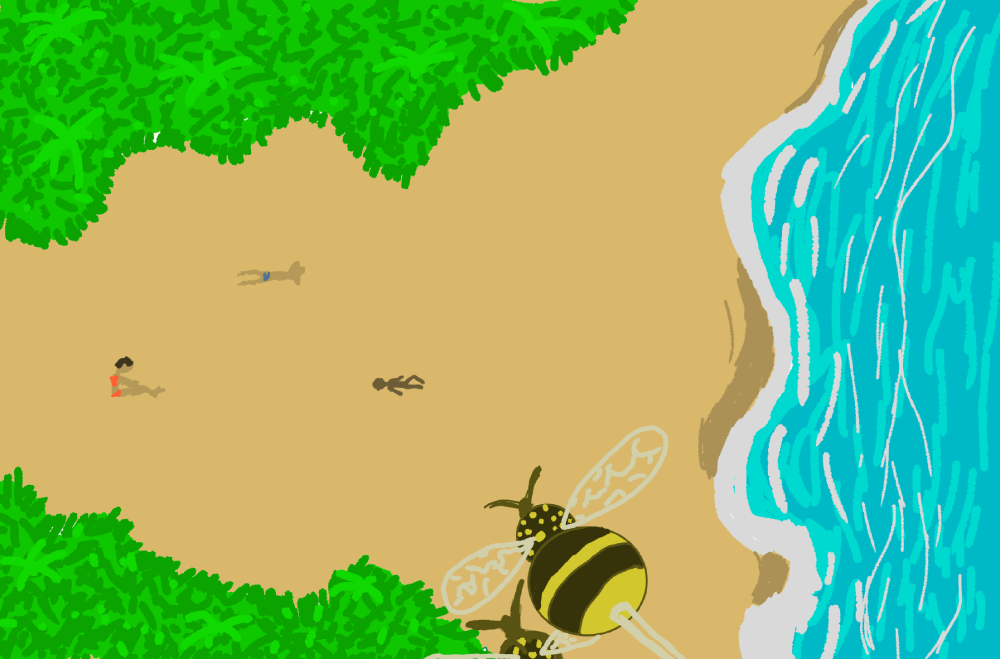

Des scientifiques humains étaient à la recherche d'un moyen pour nourrir la population humaine. Ayant observé à quel point que les insectes se multipliaient rapidement, ils se sont dit qu'il fallait envisager comme solution de se nourir d'insectes. Afin de rendre les insectes plus appétissants, ils les ont modifiés en laboratoire pour qu'ils deviennent plus dodus. Sauf que cette modification décupla leur intelligence. Ces derniers réussissent à se sauver des laboratoires et sont dans la nature le nouveau rival de l'humain.